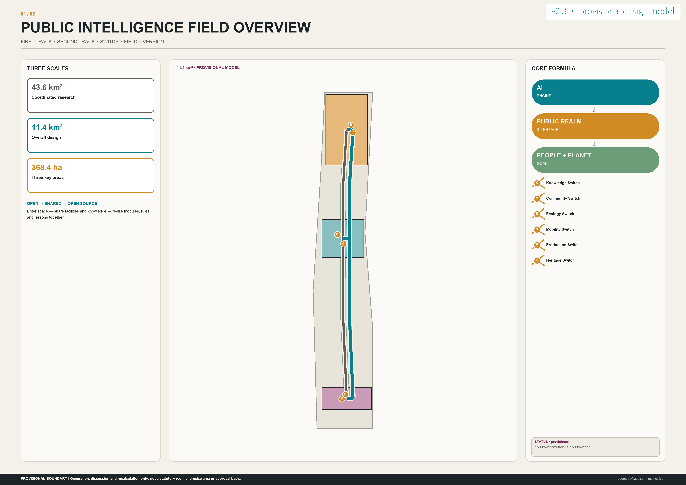
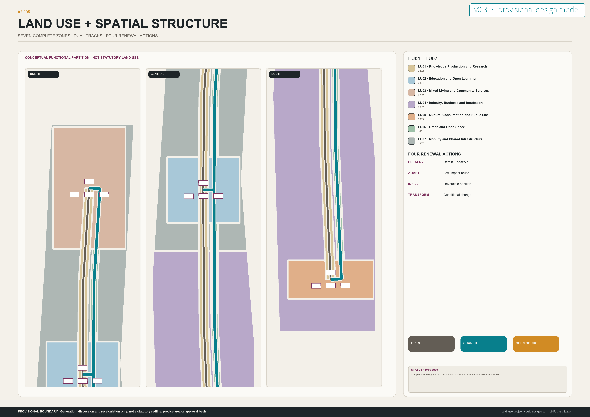
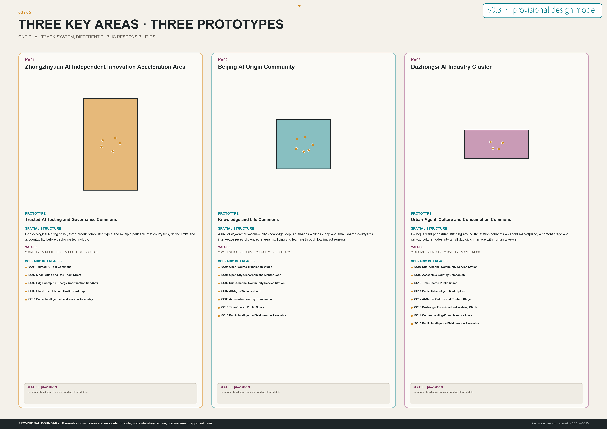
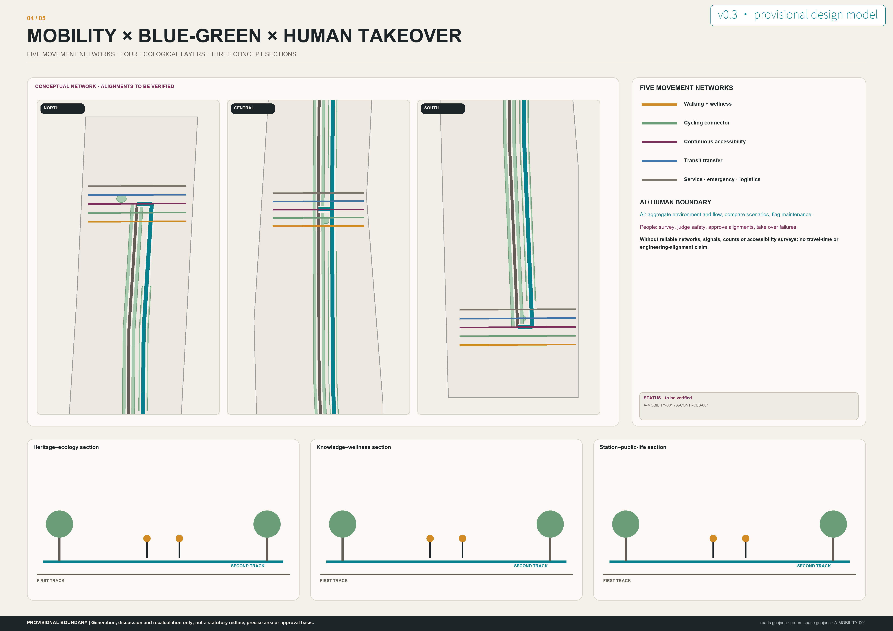
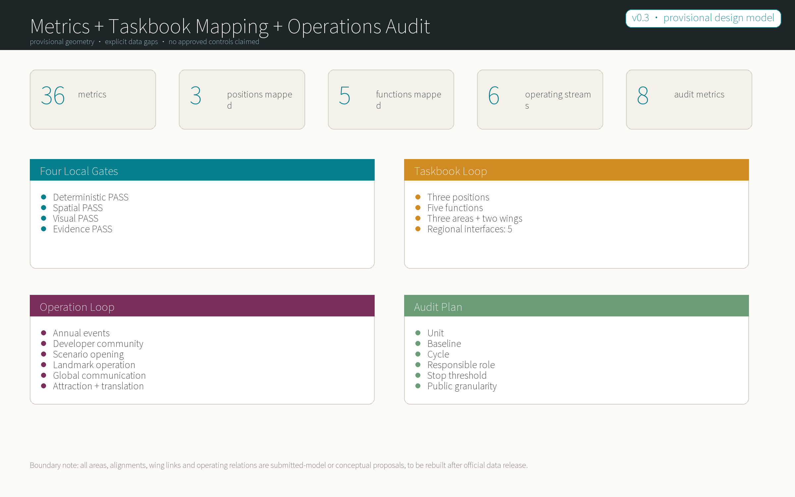
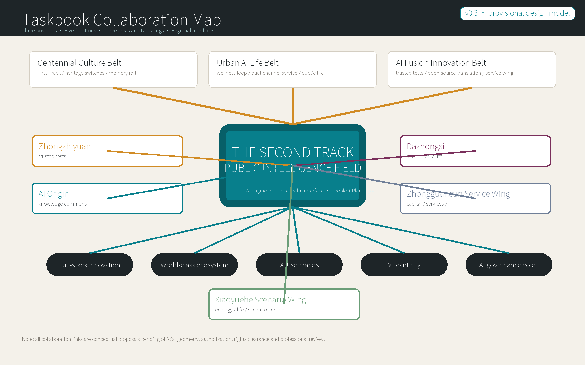
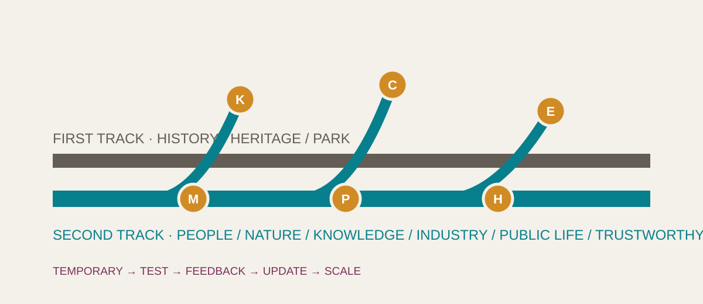

Coordinated research area
Industry, talent, global mechanisms and cultural narrative
CENTENNIAL JING-ZHANG AI INNOVATION BELT · OPEN SUBMISSION
The First Track carries history and railway heritage. The Second Track connects people, nature, knowledge, industry, public life and trustworthy AI.
AI is the engine. Public realm is the interface. People + Planet are the goal.
The First Track remains stable; the Second Track branches through switches that connect institutions and public life into an evolvable field.







Land use · mobility · blue-green public realm · buildings · renewal projects
From regional research to overall design and testable key-area prototypes.
Industry, talent, global mechanisms and cultural narrative
Overall spatial model and evidence system for the Public Intelligence Field
Three urban prototypes with distinct public responsibilities
Three positions, five functions and the three-areas-two-wings structure are organized as a testable, reviewable and exitable space-industry-operation loop.
Culture belt, AI life experience belt and AI fusion innovation belt connect to the First Track, Second Track and versioning.
Full-stack innovation, ecosystem, scenarios, vibrant city and governance voice form a loop, not a slogan list.
Zhongguancun supplies service inputs; Xiaoyuehe hosts scenario empowerment through life and ecology.
Beiwei Community, Future Science City, Huairou Science City, Beijing E-Town and Jing-Jin-Ji are exchange interfaces only, not claimed partnerships.
Connects AI Origin, everyday services and the wellness loop; conceptual only.
Frontier research, ethics and young-talent exchange; no partnership claimed.
Basic research, science communication and big-science translation; no research data transfer.
Engineering validation, supply-chain and manufacturing interfaces; no landing commitment.
Scenario replication, talent mobility and shared public questions; not a regional plan.
Not three identical AI parks, but three responsibilities: trustworthy governance, knowledge-life, and urban culture-consumption.
Trusted-AI Testing and Governance Commons
One ecological testing spine, three production-switch types and multiple pausable test courtyards; define limits and accountability before deploying technology.
Knowledge and Life Commons
A university–campus–community knowledge loop, an all-ages wellness loop and small shared courtyards interweave research, entrepreneurship, living and learning through low-impact renewal.
Urban-Agent, Culture and Consumption Commons
Four-quadrant pedestrian stitching around the station connects an agent marketplace, a content stage and railway-culture nodes into an all-day civic interface with human takeover.
Industry is a short loop among basic research, trusted testing, open-source translation, enterprise services and public feedback.
Trustworthy-AI testing, model audit, pause mechanism and public governance voice.
A knowledge-sharing community mixing universities, talent, research, entrepreneurship and life.
Agent-native consumption, cultural content, urban services and public-life interface.
Every scenario states its public problem, spatial interface, AI permission, human responsibility and pause conditions.
PUBLIC PROBLEMIndustry testing lacks a transparent, pausable and reviewable layer between the lab and public space.
SPATIAL INTERFACEPausable test courtyards, observation walks and public briefing desks in Zhongzhiyuan, separated from everyday circulation by default.
AI MAYSimulate within approved boundaries and datasets, log anomalies and generate test summaries.
HUMAN MUSTApprove test protocols, confirm safety limits, operate emergency stops and sign off any next version.
PAUSE CONDITIONSPause immediately upon out-of-scope collection, unexplained high-risk output, failed human stop or unresolved public complaint.
PUBLIC PROBLEMBias, misuse and opacity often surface only after deployment.
SPATIAL INTERFACEOpen audit rooms, adversarial labs, case galleries and a public questioning hall form a visible governance street.
AI MAYAssist in generating test cases, comparing versions and flagging anomalies for professional review.
HUMAN MUSTSet audit questions, judge material impact, protect reporters and publish conclusions.
PAUSE CONDITIONSPause for leakage, uncorrected discriminatory results, impact on real services or undisclosed conflicts of interest.
PUBLIC PROBLEMCompute facilities lack a legible coordination interface with energy, heat and utility capacity.
SPATIAL INTERFACEAn isolated sandbox of service courts, a heat-reuse garden, independent power demonstrators and a human operations room.
AI MAYForecast load on simulated data, recommend load shifting and compare energy strategies.
HUMAN MUSTConfirm equipment safety, energy dispatch, fire safety and utility interfaces; professionals execute every real switch.
PAUSE CONDITIONSPause for thermal, load or protection-limit violations, conflicting sensors or missing human confirmation.
PUBLIC PROBLEMUniversities, open-source communities and real urban problems lack a long-term spatial mechanism for working together.
SPATIAL INTERFACEBookable benches, demo steps, an open-license desk and a community problem wall surround a shared court.
AI MAYHelp organize public documentation, match collaboration skills and draft reviewable prototype notes.
HUMAN MUSTConfirm licensing, attribution, problem priority, feasibility and release decisions.
PAUSE CONDITIONSPause for unclear provenance, license conflict, sensitive information or displacement of community priorities by commercial interests.
PUBLIC PROBLEMHigh-quality knowledge is divided by campus, age and professional barriers.
SPATIAL INTERFACEIndoor-outdoor classrooms, quiet corners, children's maker benches and older-adult digital-help tables line the knowledge loop.
AI MAYHelp create multilingual, large-print and easy-read course versions and recommend public learning paths.
HUMAN MUSTTeachers and mentors verify content, safeguard minors, handle disputes and retain in-person teaching.
PAUSE CONDITIONSPause automated recommendations when errors persist, child safeguards are insufficient or accessible versions are absent.
PUBLIC PROBLEMSmart services can improve efficiency while excluding people unable or unwilling to use digital tools.
SPATIAL INTERFACEOne entrance combines a staffed desk, self-service terminals, waiting seats, a private consultation room and clear paper wayfinding.
AI MAYExplain processes, help complete forms and direct queues, but never replace eligibility decisions or deny service.
HUMAN MUSTHandle final transactions, exceptions, identity verification and appeals.
PAUSE CONDITIONSPause the smart channel when staffed service is unavailable, routing fails, privacy is exposed or human takeover is refused.
PUBLIC PROBLEMEveryday movement, rehabilitation and rest are discontinuous, while vulnerable users are displaced by fast circulation.
SPATIAL INTERFACEA step-free slow loop provides seating, water, shade, night lighting and activity points of varied intensity at regular intervals.
AI MAYUse anonymous environmental data to flag heat, crowding and suitable alternative routes.
HUMAN MUSTOperators inspect surfaces, lighting and facilities; qualified professionals provide any health advice.
PAUSE CONDITIONSStop route recommendations for unsafe segments, extreme weather, blocked accessible routes or unreliable sensors.
PUBLIC PROBLEMAccessible-route conditions change quickly, while navigation often mistakes nominal access for actual usability.
SPATIAL INTERFACEStations, major switches and service desks provide multisensory wayfinding, help buttons and staffed meeting points.
AI MAYOffer alternative routes from public facility-status data and explain uncertainty.
HUMAN MUSTConfirm works and facility status, respond to calls, assist on site and correct errors.
PAUSE CONDITIONSShow staffed assistance only when lifts or ramps cannot be verified, positioning error is excessive or human help is unavailable.
PUBLIC PROBLEMStormwater, thermal comfort and habitat performance are difficult for the public to understand and co-steward.
SPATIAL INTERFACERain gardens, observation decks, floodable lawns and community-monitoring tables form a four-season ecological classroom.
AI MAYAggregate environmental sensing, flag maintenance needs and visualize rainfall scenarios.
HUMAN MUSTEcology and utility professionals judge risk, issue warnings, maintain facilities and approve public activities.
PAUSE CONDITIONSPause public interaction during heavy rain, flood operations, sensor conflict or site closure and switch to safety notices.
PUBLIC PROBLEMLimited public space is contested by movement, quiet, performance, passage and commerce.
SPATIAL INTERFACEReversible furniture, ground-based time markings, quiet edges and public noticeboards support time sharing.
AI MAYPropose time slots from anonymous use counts and show affected groups.
HUMAN MUSTCommunity coordinators conduct open deliberation, protect minority needs and approve rules.
PAUSE CONDITIONSPause automated scheduling when complaints accumulate, emergency access is blocked, vulnerable groups are repeatedly excluded or safety conditions are insufficient.
PUBLIC PROBLEMAgent services lack a public entry where people can compare, try, complain and exit to human service.
SPATIAL INTERFACEDazhongsi provides short-term stalls, demo tables, a staffed help desk and a terms wall without turning passage into compulsory interaction.
AI MAYDemonstrate bounded functions after explicit visitor choice and explain provenance, capability and limits.
HUMAN MUSTReview listings, handle refunds and complaints, and check accessibility and child safeguards.
PAUSE CONDITIONSDelist for false capability claims, implied official endorsement, forced registration, discriminatory service or failed complaint handling.
PUBLIC PROBLEMGenerated content in public culture can blur authorship, training provenance, authenticity and responsibility.
SPATIAL INTERFACEA reconfigurable stage, provenance-label band, quiet viewing area and staffed curatorial desk form a content commons.
AI MAYAssist creation, captions, translation and accessible description from cleared inputs, with explicit labeling.
HUMAN MUSTCurate, verify rights and historical facts, judge public suitability and respond to creator appeals.
PAUSE CONDITIONSStop publication for unclear rights, misleading content, malformed people or missing essential accessible versions.
PUBLIC PROBLEMGround-level walking, bicycle parking and public interfaces lack continuity among the station's four quadrants.
SPATIAL INTERFACEA conceptual stitch prioritizing continuous ground routes, legible crossings, organized bicycle parking and shaded waiting, without presuming bridge or tunnel works.
AI MAYAfter reliable network data arrives, assist comparison of pedestrian conflict and queue scenarios.
HUMAN MUSTMobility and accessibility professionals survey conditions, judge signals and road safety, and complete statutory approvals.
PAUSE CONDITIONSWithout road redlines, signals, flow counts or accessibility surveys, produce no engineering alignment or travel-time conclusion.
PUBLIC PROBLEMRailway heritage can become decoration, while the Phase I park experience lacks a sustained dialogue with public life in the AI era.
SPATIAL INTERFACERail traces, oral-history listening points, low-impact labels and community curatorial tables connect the First and Second Tracks.
AI MAYProvide multilingual retrieval, accessible narration and source links from verified historical material.
HUMAN MUSTHistorians, heritage professionals and communities jointly verify facts, rights and narrative choices.
PAUSE CONDITIONSPause for unresolved factual conflict, unclear rights or physical intervention without heritage-control data.
PUBLIC PROBLEMUrban innovation often has launch mechanisms but lacks public feedback, pause, correction and exit.
SPATIAL INTERFACEEach area has a version desk; an annual public assembly combines scenario evidence, complaints, six-value performance and next-round proposals.
AI MAYSynthesize public evidence, identify underrepresented groups, compare versions and draft impact lists for alternatives.
HUMAN MUSTConvene public deliberation, check representation, resolve conflict, decide pause/update/scale and remain accountable.
PAUSE CONDITIONSDo not scale when evidence is untraceable, key groups are absent, complaints fail or any of the six values materially deteriorates.
Technology and growth are insufficient: every move must answer wellness, connection, equity, safety, resilience/infrastructure and ecology.
Support physical activity, mental restoration, thermal comfort and access to care.
Create low-threshold interfaces for encounter, collaboration, learning and intergenerational exchange.
Preserve non-digital channels, accessible continuity and affordable shared resources.
Constrain AI through data minimization, human review, pause mechanisms and clear accountability.
Organize compute, energy, utilities, mobility and emergency systems as replaceable and recoverable networks.
Treat blue-green continuity, habitat, stormwater retention and low-carbon operation as spatial performance.
site_area_sqmgreen_ratiopublic_space_ratioroad_area_sqmfloor_area_ratiobuilding_height_mTEMPORARY → TEST → FEEDBACK → UPDATE → SCALE
Marker, furniture, event-log and removal manuals.
Test protocol, pause conditions and review template.
Courses, prototypes, license checklist and contributor record.
Dual-channel service blueprint and accessibility checklist.
Anonymous use observation, facility inspection and correction log.
Environmental data dictionary, sensitivity tiers and public observation protocol.
Annual version log and reasoned pause/update/scale decisions.
K/C/E/M/P/H component atlas with applicability limits.
Calendar template, open-call rules and conversion-tracking framework.
Replicable rules, non-replicable conditions, risk register and exit plan.
Cases transfer mechanisms only, never form, imagery or performance figures.
Industry, campus and digital infrastructure coordinate through an integrated operating framework.
Translate into a shared testing ground in Zhongzhiyuan and a short knowledge-to-industry loop at AI Origin.
Organize innovation around resident time savings and real-life experimentation.
Translate into six public values, rather than device counts, as scenario performance.
Run real-district trials through partnership agreements and evaluation frameworks.
Translate into pre-test agreements, public limits, human stop and version review.
Government, knowledge institutions, enterprises and communities learn together around place.
Translate into three place prototypes and a public version assembly.
Open-source code, participation safeguards and democratic governance principles constrain one another.
Translate into Open, Shared and Open Source levels with traceable version decisions.
Embed social impact, interdisciplinary judgment and responsible R&D in innovation.
Translate into the Zhongzhiyuan audit street and the human-must field of every scenario.
Connect knowledge assets through walkable proximity, institutional networks and shared agendas.
Translate into AI Origin's knowledge loop and open classrooms.
Large smart-district proposals require continuing audit of data governance, public value and accountability.
Translate into data minimization, no scaling by default, a public risk register and exit mechanisms.
Every visible conclusion returns to local files, metric status and human review.
sources.json · metrics.json · geometry/*.geojson · compliance_matrix.json · standard_matrix.json · design_depth_matrix.json
In build: final manifest and all four gates will be regenerated before submission.
The current site and three key-area geometries use repository-supplied provisional boundaries only for generation, clipping, discussion and recalculable metrics.
provisional_onlyProject-specific approved FAR, height, density, setback, road-redline, ownership, utility, fire-safety and heritage controls are not yet available.
pending_professional_confirmationBuilding footprints and program mixes form a conceptual test model for public-space, scenario and implementation logic, not demolition or construction decisions.
concept_designThe Second Track movement network, switches and service routes are conceptual connections pending transport, fire, accessibility and utility checks.
concept_designTemporary → Test → Feedback → Update → Scale is a governance and delivery hypothesis; packages, actors, budgets and timing require joint confirmation.
operational_hypothesisDiagrams, visualizations and generated images communicate design intent; depicted people, events, vegetation maturity and operations are not existing facts or completion promises.
generated_design_assetThe Second Track is not a corporate logo. It is a civic wayfinding motif built from dual tracks, switches, contribution, provenance and rules.
The Second Track | Jing-Zhang Public Intelligence Field.
Knowledge, Community, Ecology, Mobility, Production and Heritage switches.
Provenance labels, memory rail, oral-history consent and generated-content labels.
Contributor wall, open-release shelf, failure-review wall and version log.
Six operating streams, six decision gates and auditable exits keep the city testing, feeding back and updating instead of becoming a one-off final state.
Open Questions, Field Tests, Public Review, Release & Assembly, Learning from Failure.
Mentors, license consultation, contribution records and public question library.
Test protocols, emergency stop, human takeover, incident closeout and exit paths.
Bilingual fact-checking, media kit, public-value gates and withdrawal of misleading copy.